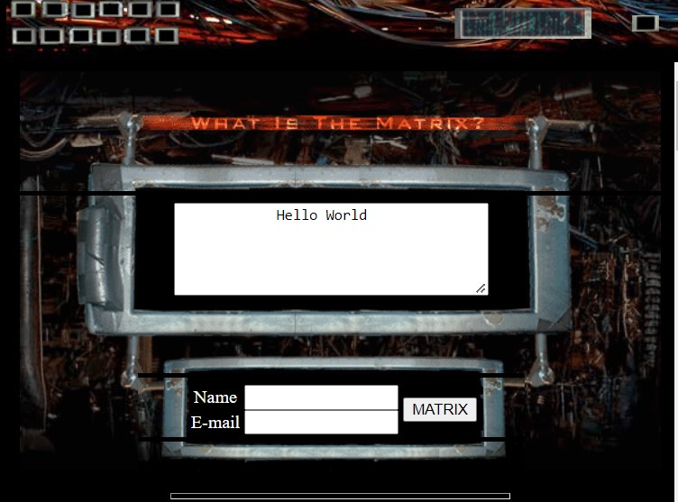

So for this submission I had to cut a few corners and really focus on the most overlying issues,
those being the "DIV soups" I have a habit of using and the lack of semantic elements.
The second issue that I wanted to address on this submission was the metatags and microformatting.
Then the next order of business was general 'quality of life' improvements such as editing fonts, color schemes, and the dynamic animations.
Another aspect I had to reconsider was making things a lot more ordered, structured and most importantly, consistent.
In terms of the colors and overall layout I wanted to really commit to the whole Matrix theme.
So to do so I wanted to make things look exactly how a Matrix website would be styled,
and so I had to consider how best to design the website around the aesthetics of the Matrix while in-keeping with the conventions of modern websites.

As an interesting side-note the two screenshots are taken directly from the official Matrix website released in 1999,
as a marketing tool to get people to answer the age old question, "What is The Matrix?". Digressions aside,
one thing I really considered here was the use of fonts and colors and how these create certain feelings with the audience. Intially upon getting feedback from my peers and tutors I identified one prevalent issue,
the color, or rather lack thereof. So for this submission I was tempted to change the color scheme completely and opt for colors that weren't as high contrast.